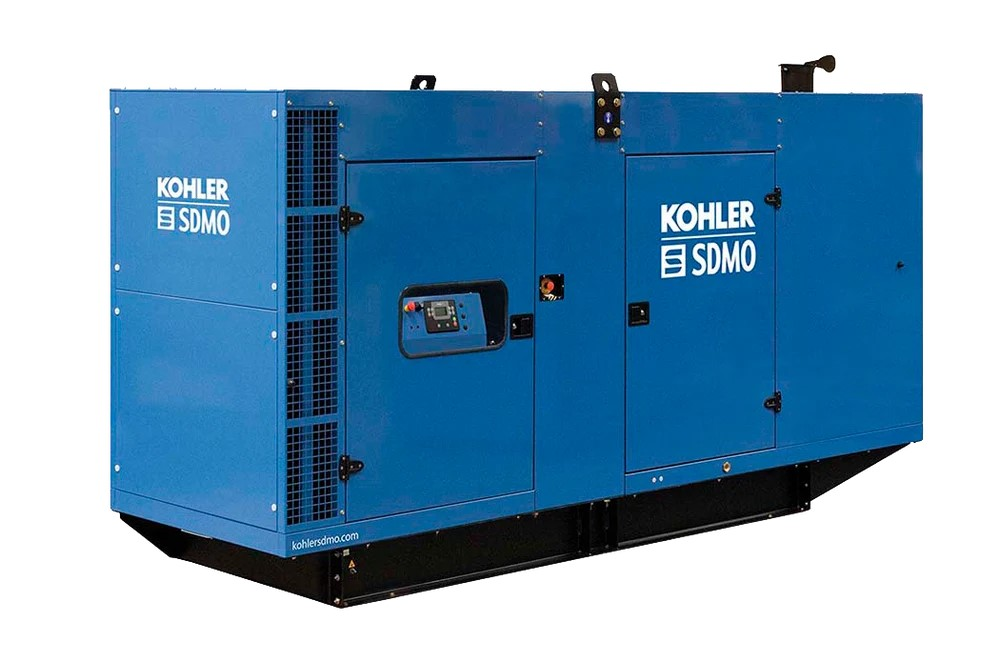

🛑 BARRERA DE SEGURIDAD
Validación de EPP y LOTO obligatoria para intervenir APM303, sensores y gobernador. Dotación mínima: 2 personas.
📋 Checklist de EPP

⚙️ 1. Preparación y Riesgos Críticos
- LOTO y Eléctrica: Desconectar borne negativo (-) de batería para evitar arranque al "barrar" el motor.
- Presión de Fluidos: Despresurizar lento. Riesgo de inyección subcutánea cerca del múltiple.
- Térmica: Solicitar Permiso en Caliente si hay que aplicar soplete a sensores agripados.
Herramientas y Metrología Requerida (4.0 HH)
- Torquímetro de rango bajo (calibrado).
- Galgas de espesores (0.05 a 1.0 mm).
- Multímetro True-RMS y Destornilladores aislados 1000V.
- Llaves corona (10 a 22 mm).
📊 2. Criticidad de Componentes
| Subconjunto | NPR | Estado | Falla principal |
|---|---|---|---|
| Regulador Velocidad | 96 | Crítico | Inestabilidad / Overspeed |
| Sensores (P/T) | 128 | Crítico | Anula protección (Shutdown) |
| APM303 | 48* | Crítico | Falla CPU. Deja red sin respaldo. |
| Parada Emergencia | 144 | Crítico | Falla oculta de contactos NC. |
🛠️ 3. Rutina de Mantenimiento
Paso 1: Controlador APM303 y Parada de Emergencia
- Verificar Energía Cero en bornes K1/K6.
- Limpiar contactos traseros con solvente dieléctrico.
- Medir continuidad óhmica en contactos NC de la Parada de Emergencia.
📷 Añadir: Captura de pantalla del menú principal / estados del APM303

📷 Añadir: Foto de las conexiones traseras K1/K6 del controlador

Paso 2: Gobernador y Sensor Magnético (Pickup)
- Revisar fluidez del varillaje del actuador en bomba de inyección.
- Retirar Pickup del volante de inercia y limpiar limaduras.
- Calibración: Enroscar hasta topar con diente de engranaje (0 mm).
- Retroceder exactamente 3/4 de vuelta en sentido antihorario.
- Verificar Air Gap a 0.45 mm con galgas y fijar contratuerca.
📷 Añadir: Foto o esquema del Gobernador / Ajuste del Pickup

Paso 3: Sensores de Presión y Temperatura
- Extraer sensores defectuosos con llave 19mm.
- Limpiar roscas y aplicar sellador de teflón líquido.
- Torque estricto: Instalar sensores M14x1.5 aplicando 4.1 a 4.3 kg·m.
- Desechar sensores antiguos como RESPEL (Norma MARPOL).
📷 Añadir: Captura de pantalla APM303 mostrando valores mecánicos (Temp/Presión)